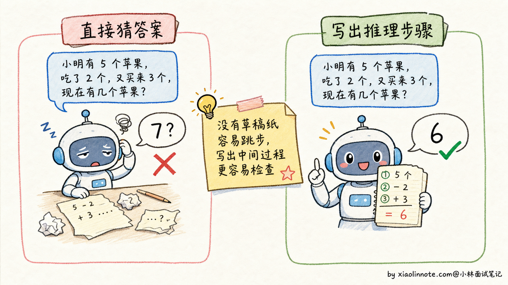
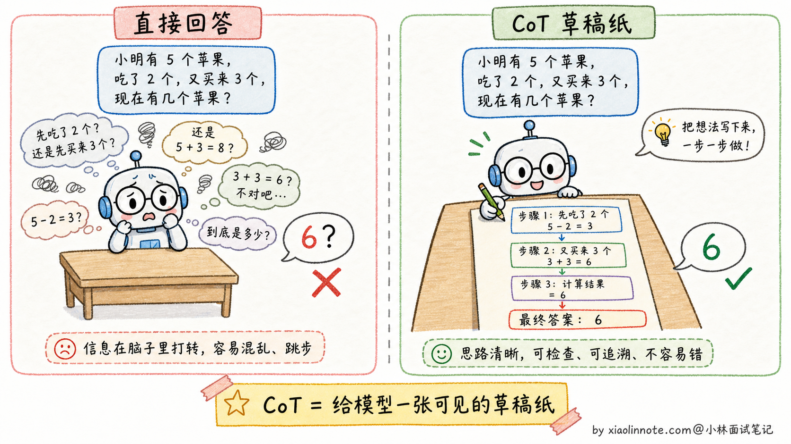
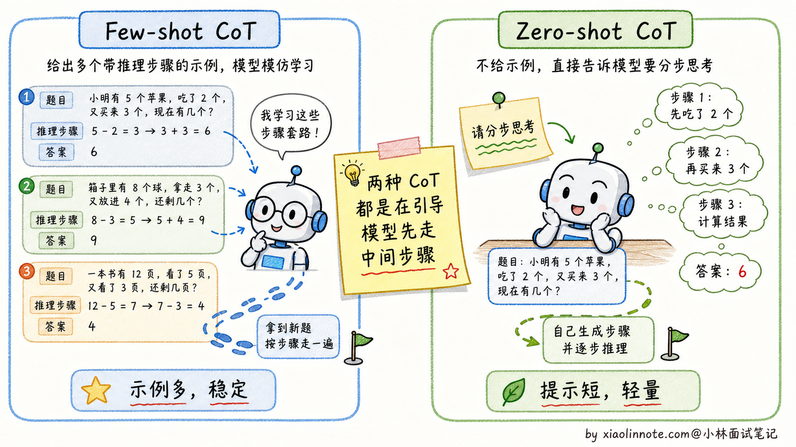
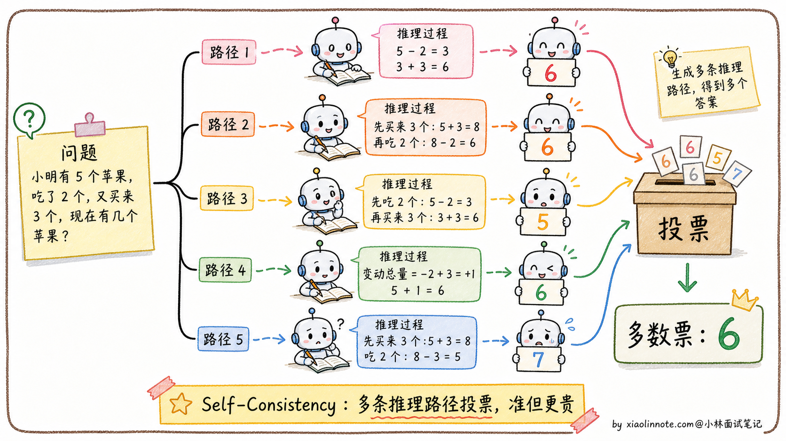
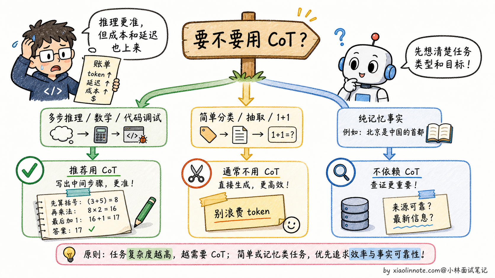

什么是 CoT？为啥效果好？它有什么缺点或局限性？
👔面试官：来讲讲什么是 CoT？为啥效果好？它有什么缺点或局限性？
🙋♂️我：CoT 就是 Chain-of-Thought，让模型一步步思考，效果会更好。
👔面试官：……「让模型一步步思考」是表面话。为什么一步步思考效果就好？模型有想吗？再说，CoT 一定有用吗？什么场景下会反而拖累效果？
🙋♂️我：呃，应该是模型推理过程里能看到中间步骤？
👔面试官：方向对。但你只说了好的一面，没说局限。CoT 不是万能的，对简单问题反而是浪费 token，推理链本身也可能出错。这两个限制你能讲清楚吗？
🙋♂️我：呃……我以为 CoT 都是好的。
👔面试官：典型的「只看好处不看代价」。CoT 的成本（token 多 + 延迟高）和风险（推理链错误传导）都得讲清楚，才知道什么时候该用。回去搞清楚再来。
这几个反问问下来，其实点的是同一件事，CoT 真不是一句「让模型一步一步想」能糊弄过去的。它为什么有效、什么时候反而起反作用、怎么和 Few-shot 搭配，得连着讲清楚。
💡 简要回答
CoT 我第一次用是在做一个需要多步逻辑推理的任务，发现只要让模型先分步分析，效果提升就很明显。后来理解了为什么：模型是一个 token 一个 token 生成的，让它先组织中间步骤，等于给了它「草稿纸」，后面生成答案时能利用前面的推理上下文，自然出错就少了。缺点也很实际，消耗的 token 会多很多，延迟和成本都上去了，而且推理链本身也可能出错、错误还会累积传导。所以我的经验是：对需要多步推理的任务用 CoT，简单问答直接回答就好；对外产品里不一定展示完整 CoT，展示简要理由或核查步骤通常更合适。
📝 详细解析
没有 CoT 时模型在做什么
大语言模型在没有 CoT 的情况下，处理问题的方式有点像人在没睡醒的时候凭直觉答题：看到题目，从记忆里拼出一个听起来合理的答案，跳过了中间的推理过程。对于简单问题，这没什么问题。但一旦题目涉及多步计算、逻辑推导或因果链，直接跳答案就很容易出错，因为模型没有一步步「检查」自己的逻辑。
一个经典的例子：问模型「小明有 5 个苹果，他给了小红 2 个，然后又买了 3 个，最后还剩几个？」如果模型直接输出答案，可能会犯各种错误，比如只做了一步运算。但如果让模型写出推理过程：「小明初始 5 个，给出 2 个后剩 3 个，再买 3 个后变成 6 个」，每一步都很容易验证，错误自然就少了。

CoT 的核心思路
CoT 的本质是让模型「推出来」而不是「直接猜出来」。对于复杂问题，答案无法直接从训练数据里召回，但可以通过一步步推理得到。每一步推理都基于上一步的结论，整个过程在模型上下文里更清晰。
但要注意，「让模型推理」和「把完整推理链展示给用户」不是一回事。现代产品和 API 往往会让模型内部完成推理，最终只给用户简洁答案、关键依据或可核查步骤。这样既保留推理收益，又避免输出冗长、不稳定的思考链。
一个关键的洞见是：语言模型生成 token 的方式本身就支持这种逐步推理，因为模型是一个 token 接一个 token 生成的，每生成一个新 token 时都能「看到」前面所有已生成的内容。所以让它先生成推理步骤，相当于给后续的答案生成提供了更多的「工作记忆」。
基于这个思路，CoT 有两种实现方式，复杂度不同，适用场景也有差异。

两种 CoT 形式
- Few-shot CoT 是在 Prompt 里给出几个完整的「推理示例」，每个示例都包含问题、逐步推理过程和最终答案。模型看到这种模式后，会自动对新问题套用同样的推理格式。这种方式效果最稳定，适合对准确率要求高的场景。
- Zero-shot CoT 更简单粗暴：在问题末尾加上一句「请分步思考后再给结论」这类提示。这是研究里发现的一个有趣现象，仅仅这一类指令就能激活模型的推理能力，让它自发地组织中间步骤。Zero-shot CoT 不需要写示例，Prompt 更简洁，虽然效果通常略逊于 Few-shot CoT，但在很多场景下已经足够好。

为什么 CoT 有效
CoT 有效的原因可以从几个角度来理解。
- 第一，逐步推理让每一步的错误都暴露出来，方便模型（或人）发现和纠正，而不是把错误隐藏在一个不透明的「答案」里。
- 第二，中间步骤充当了「草稿纸」的作用，复杂的中间状态不再需要全部存在模型的「隐状态」里，通过显式输出记下来，减轻了模型的推理负担。
- 第三，CoT 激活了模型在预训练时从大量推理型文本（数学解题、逻辑分析等）中学到的推理模式。
Self-Consistency：CoT 的升级版
Self-Consistency 是在 CoT 基础上的进一步增强。做法是对同一个问题，用较高的温度（temperature）生成多条不同的推理路径，然后取最终答案里出现最多次的那个（多数投票）。
这个方法的直觉是：正确的答案往往可以通过多种不同的推理路径得到，而错误的答案往往是随机产生的，不同路径不太可能收敛到同一个错误答案。实验证明，Self-Consistency 能在 CoT 基础上进一步提升 5-15% 的准确率，尤其在数学推理类任务上效果显著。代价是调用次数变多（通常 5-10 次），成本和延迟也随之增加。不管是基础 CoT 还是 Self-Consistency，都会带来额外的成本和延迟，这也引出了 CoT 本身的局限性。

CoT 的局限性
CoT 并不是万能的，它有几个明显的局限。
首先是 token 消耗大：推理链会额外生成几百甚至上千个 token，API 成本和响应时间都会显著增加。其次是对简单问题适得其反：让模型对「1+1 等于几」也展开推理，只会浪费 token、降低速度，并不会提升准确率。再者是推理链本身也会出错：如果第 2 步推理错了，第 3、4 步会基于错误的前提继续推导，最终答案大概率也是错的。
CoT 能减少跳跃性错误，但不能消除推理错误。最后，CoT 对纯粹依赖记忆的任务（比如「请问 2020 年奥运会在哪里举办」）没有帮助，因为这类问题根本不需要推理。
简单来说，CoT 是为「需要多步推理」的问题设计的工具，在数学、逻辑题、代码调试这类场景里很有价值；对简单问答、分类、信息提取这类不需要推理的任务，用普通 Prompt 就好了。

🎯 面试总结
回到开头那段对话，问到 CoT，最重要的是先把为什么有效讲清楚。模型是一个 token 一个 token 生成的，让它先组织推理步骤，等于给了它一张「草稿纸」，后面生成答案时能利用前面的推理上下文，自然出错就少了。这一句铺垫先讲到，面试官就知道你抓到了 CoT 的本质机制。
讲完原理后，把两种 CoT 形式说清楚。Few-shot CoT 是在 Prompt 里给几个完整的「推理示例」，效果稳定但 Prompt 长；Zero-shot CoT 就是加一句「让我们一步步思考」，简单但效果略差。两者的取舍要根据任务复杂度选。
最关键的是讲清CoT 的局限，这是面试官最爱追问的：token 消耗大（推理链会额外几百甚至上千 token，成本和延迟都上去了）；对简单问题适得其反（「1+1 等于几」也展开推理是浪费）；推理链本身可能出错（错误会沿着链路累积传导）；对纯记忆类任务没帮助（「2020 年奥运会在哪」不需要推理）。能把这些代价讲全，比单纯说「CoT 好」深刻得多。
如果还想再加分，可以提一句 Self-Consistency（CoT 的升级版，多次采样多条推理路径再投票），以及「生产环境不一定展示完整 CoT，通常展示简要依据或最终答案」。能讲到这一层，面试官就知道你对推理类技术有持续跟进，是面试加分项。